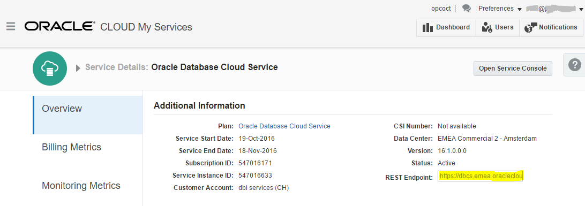

This was first published on https://www.dbi-services.com/blog/oracle-public-cloud-create-a-database-from-command-line/ (2016-11-07)
Republishing here for new followers. The content is related to the versions available at the publication date.
.
You love the Oracle Public Cloud with its simple Web interface? Great. But what if you want to automate a database creation from command line?
Easy with the CURL and REST API.
First, you need to create a JSON file with all the information for your service.
Everything is documented: https://apicatalog.oraclecloud.com/ui/views/apicollection/oracle-public/database/1.1/serviceinstances
$ cat createrequestbody.json
{
"description": "Mon Nov 7 21:03:39 CET 2016",
"edition": "EE_HP",
"level": "PAAS",
"serviceName": "CDB122",
"shape": "oc3",
"subscriptionType": "MONTHLY",
"version": "12.2.0.1",
"vmPublicKeyText": "ssh-dss AAAAB3NzaC1kc3MAAACBAMrw5Au0hHP1BT/W3gcSg+Fwq36LdfzroubjS6g8RSvcaeltk1O/uQwJV73MCsBDgs4PaAuDekZTW5w6kN8ESd6r6BGLm/sETHNiRzOWWap3ds18iiaLJWcMbKRlZUWLdfhGemryWZaQIFrSNkfE5YkFz4V4m5d4EwKpLzIthKh3AAAAFQDtjTsaF7nydePPJPDqYERu8QlcMQAAAIBjl8NxEmE7nud7b4xuLkuJKnwlf2urHrOZGcQapNUZAjuehe6/8VhPB4GebZb52GlyYOuELDP6e9PXyFRxTfTPff22JE5tPM8vTjCmFEKhBspl43YurJxwvDtvgTNKk5Zp5MBXMDjQ8KNHXlpnRrfh45acHI8gs0KlH51+e7j+6AAAAIA/Q8rVC4g+MBepJGKed2ar0JzralZo7Q8vsZfQ889Y3wkaBJl2/SRaaW1JNmkB20eZIEbRkh9e/ex07ryKg65dgUzU4/2dE2CSxplG0vSf/xp7hYr/bJzR1SZXMKbAdZ2wg+SGaTlKWAAS9xhvKGw1jVWdVgacYJOPl343bMKkuw==",
"parameters": [
{
"type": "db",
"usableStorage": "15",
"adminPassword": "P4ss#ord",
"sid": "CDB122",
"pdbName": "PDB1",
"failoverDatabase": "no",
"backupDestination": "NONE"
}
]
}
You can see that you have exactly the same information as from the GUI.
Then, you run the following CURL command (having the cacert.pem certificate in the current directory:
$ curl --include --request POST --cacert ./cacert.pem --user myuser@oracle.com:P4ss#ord --header "X-ID-TENANT-NAME:opcoct" --header "Content-Type:application/json" --data @createrequestbody.json https://dbcs.emea.oraclecloud.com/paas/service/dbcs/api/v1.1/instances/opcoct
HTTP/2 202
server: Oracle-Application-Server-11g
location: https://dbcs.emea.oraclecloud.com:443/paas/service/dbcs/api/v1.1/instances/opcoct/status/create/job/2738110
content-language: en
access-control-allow-origin: *
access-control-allow-headers: Content-Type, api_key, Authorization
retry-after: 60
access-control-allow-methods: GET, POST, DELETE, PUT, OPTIONS, HEAD
x-oracle-dms-ecid: 005GBi63mCP3n315RvWByd0003Ri0004Zg
x-oracle-dms-ecid: 005GBi63mCP3n315RvWByd0003Ri0004Zg
service-uri: https://dbcs.emea.oraclecloud.com:443/paas/service/dbcs/api/v1.1/instances/opcoct/CDB122
x-frame-options: DENY
content-type: application/json
vary: user-agent
date: Mon, 07 Nov 2016 20:03:59 GMT
Here “opcoct” is my identity domain id. You find it in the header X-ID-TENANT-NAME and the URL.
The myuser@oracle.com:P4ss#ord is the user and password in the domain.
From the GUI you can see that the creation has started:
Here is the information for the database service
$ curl --include --request GET --cacert ./cacert.pem --user myuser@oracle.com:P4ss#ord --header "X-ID-TENANT-NAME:opcoct" https://dbcs.emea.oraclecloud.com/paas/service/dbcs/api/v1.1/instances/opcoct/CDB122
HTTP/2 200
server: Oracle-Application-Server-11g
content-language: en
service-uri: https://dbcs.emea.oraclecloud.com:443/paas/service/dbcs/api/v1.1/instances/opcoct/CDB122
access-control-allow-headers: Content-Type, api_key, Authorization
access-control-allow-methods: GET, POST, DELETE, PUT, OPTIONS, HEAD
x-oracle-dms-ecid: 005GBiK7U4I3z015Rvl3id00071a0000yo
x-oracle-dms-ecid: 005GBiK7U4I3z015Rvl3id00071a0000yo
access-control-allow-origin: *
x-frame-options: DENY
content-type: application/json
vary: user-agent
date: Mon, 07 Nov 2016 20:07:52 GMT
content-length: 1244
{
"service_name": "CDB122",
"version": "12.2.0.1",
"status": "In Progress",
"description": "Mon Nov 7 21:03:39 CET 2016",
"identity_domain": "opcoct",
"creation_time": "2016-11-07T20:03:59.524+0000",
"last_modified_time": "2016-11-07T20:03:59.505+0000",
"created_by": "myuser@oracle.com",
"sm_plugin_version": "16.4.3-541",
"service_uri": "https:\/\/dbcs.emea.oraclecloud.com:443\/paas\/service\/dbcs\/api\/v1.1\/instances\/opcoct\/CDB122",
"num_nodes": 1,
"level": "PAAS",
"edition": "EE_HP",
"shape": "oc3",
"subscriptionType": "MONTHLY",
"creation_job_id": "2738110",
"num_ip_reservations": 1,
"backup_destination": "NONE",
"failover_database": false,
"rac_database": false,
"sid": "CDB122",
"pdbName": "PDB1",
"demoPdb": "",
"listenerPort": 1521,
"timezone": "UTC",
"is_clone": false,
"clone_supported_version": "16.3.1",
"active_jobs": [
{
"active_job_operation": "start-db-compute-resources",
"active_job_id": 2738113,
"active_job_messages": []
},
{
"active_job_operation": "create-dbaas-service",
"active_job_id": 2738110,
"active_job_messages": []
}
],
"compute_site_name": "EM003_Z19",
"jaas_instances_using_service": ""
}
The status is ‘in progress’. Let’s look at the compute service.
From the compute service, you can see if there is already an IP address assigned here
$ curl --include --request GET --cacert ./cacert.pem --user myuser@oracle.com:P4ss#ord --header "X-ID-TENANT-NAME:opcoct" https://dbcs.emea.oraclecloud.com/paas/service/dbcs/api/v1.1/instances/opcoct/CDB122/servers
HTTP/2 200
server: Oracle-Application-Server-11g
content-language: en
access-control-allow-headers: Content-Type, api_key, Authorization
access-control-allow-methods: GET, POST, DELETE, PUT, OPTIONS, HEAD
x-oracle-dms-ecid: 005GBiMizXo3z015Rvl3id00071a0004p_
x-oracle-dms-ecid: 005GBiMizXo3z015Rvl3id00071a0004p_
access-control-allow-origin: *
x-frame-options: DENY
content-type: application/json
vary: user-agent
date: Mon, 07 Nov 2016 20:08:35 GMT
content-length: 430
[{
"status": "Running",
"creation_job_id": "2738110",
"creation_time": "2016-11-07T20:03:59.524+0000",
"created_by": "myuser@oracle.com",
"shape": "oc3",
"sid": "CDB122",
"pdbName": "PDB1",
"listenerPort": 1521,
"connect_descriptor": "CDB122:1521\/PDB1",
"connect_descriptor_with_public_ip": "null:1521\/PDB1",
"initialPrimary": true,
"storageAllocated": 142336,
"reservedIP": "",
"hostname": "CDB122"
}]
No IP address yet. I have the job id (2738110) so that I can check it later.
$ curl --include --request GET --cacert ./cacert.pem --user myuser@oracle.com:P4ss#ord --header "X-ID-TENANT-NAME:opcoct" https://dbcs.emea.oraclecloud.com/paas/service/dbcs/api/v1.1/instances/opcoct/status/create/job/2738110
HTTP/2 202
server: Oracle-Application-Server-11g
location: https://dbcs.emea.oraclecloud.com:443/paas/service/dbcs/api/v1.1/instances/opcoct/status/create/job/2738110
content-language: en
access-control-allow-origin: *
access-control-allow-headers: Content-Type, api_key, Authorization
retry-after: 60
access-control-allow-methods: GET, POST, DELETE, PUT, OPTIONS, HEAD
x-oracle-dms-ecid: 005GBiOeMbz3n315RvWByd0003Ri00048d
x-oracle-dms-ecid: 005GBiOeMbz3n315RvWByd0003Ri00048d
service-uri: https://dbcs.emea.oraclecloud.com:443/paas/service/dbcs/api/v1.1/instances/opcoct/CDB122
x-frame-options: DENY
content-type: application/json
vary: user-agent
date: Mon, 07 Nov 2016 20:09:08 GMT
{
"service_name": "CDB122",
"version": "12.2.0.1",
"status": "In Progress",
"description": "Mon Nov 7 21:03:39 CET 2016",
"identity_domain": "opcoct",
"creation_time": "2016-11-07T20:03:59.524+0000",
"last_modified_time": "2016-11-07T20:03:59.505+0000",
"created_by": "myuser@oracle.com",
"sm_plugin_version": "16.4.3-541",
"service_uri": "https:\/\/dbcs.emea.oraclecloud.com:443\/paas\/service\/dbcs\/api\/v1.1\/instances\/opcoct\/CDB122",
"message": ["Starting Compute resources..."],
"job_start_date": "Mon Nov 07 20:04:01 GMT 2016",
"job_status": "InProgress",
"job_operation": "create-dbaas-service",
"job_request_params": {
"edition": "EE_HP",
"vmPublicKeyText": "ssh-dss AAAAB3NzaC1kc3MAAACBAMrw5Au0hHP1BT/W3gcSg+Fwq36LdfzroubjS6g8RSvcaeltk1O/uQwJV73MCsBDgs4PaAuDekZTW5w6kN8ESd6r6BGLm/sETHNiRzOWWap3ds18iiaLJWcMbKRlZUWLdfhGemryWZaQIFrSNkfE5YkFz4V4m5d4EwKpLzIthKh3AAAAFQDtjTsaF7nydePPJPDqYERu8QlcMQAAAIBjl8NxEmE7nud7b4xuLkuJKnwlf2urHrOZGcQapNUZAjuehe6/8VhPB4GebZb52GlyYOuELDP6e9PXyFRxTfTPff22JE5tPM8vTjCmFEKhBspl43YurJxwvDtvgTNKk5Zp5MBXMDjQ8KNHXlpnRrfh45acHI8gs0KlH51+e7j+6AAAAIA/Q8rVC4g+MBepJGKed2ar0JzralZo7Q8vsZfQ889Y3wkaBJl2/SRaaW1JNmkB20eZIEbRkh9e/ex07ryKg65dgUzU4/2dE2CSxplG0vSf/xp7hYr/bJzR1SZXMKbAdZ2wg+SGaTlKWAAS9xhvKGw1jVWdVgacYJOPl343bMKkuw==",
"count": "2",
"provisioningTimeout": "180",
"subscriptionType": "MONTHLY",
"createStorageContainerIfMissing": "false",
"dbConsolePort": "1158",
"listenerPort": "1521",
"serviceName": "CDB122",
"namespace": "dbaas",
"version": "12.2.0.1",
"timezone": "UTC",
"pdbName": "PDB1",
"level": "PAAS",
"tenant": "opcoct",
"serviceInstance": "CDB122",
"description": "Mon Nov 7 21:03:39 CET 2016",
"failoverDatabase": "false",
"emExpressPort": "5500",
"ncharset": "AL16UTF16",
"trial": "false",
"sid": "CDB122",
"noRollback": "false",
"operationName": "create-dbaas-service",
"goldenGate": "false",
"backupDestination": "NONE",
"ibkup": "false",
"charset": "AL32UTF8",
"serviceVersion": "12.2.0.1",
"shape": "oc3",
"identity_domain_id": "opcoct",
"serviceType": "dbaas",
"usableStorage": "15",
"disasterRecovery": "false",
"server_base_uri": "https:\/\/dbcs.emea.oraclecloud.com:443\/paas\/service\/dbcs\/",
"computeSiteName": "EM003_Z19",
"isRac": "false"
}
}
Here, my test is on the EMEA datacenter and this is why the URL starts with https://dbcs.emea.oraclecloud.com 
If you don’t know, you can check on My Cloud Services where you have all information:
{kind=link}
{kind=link}